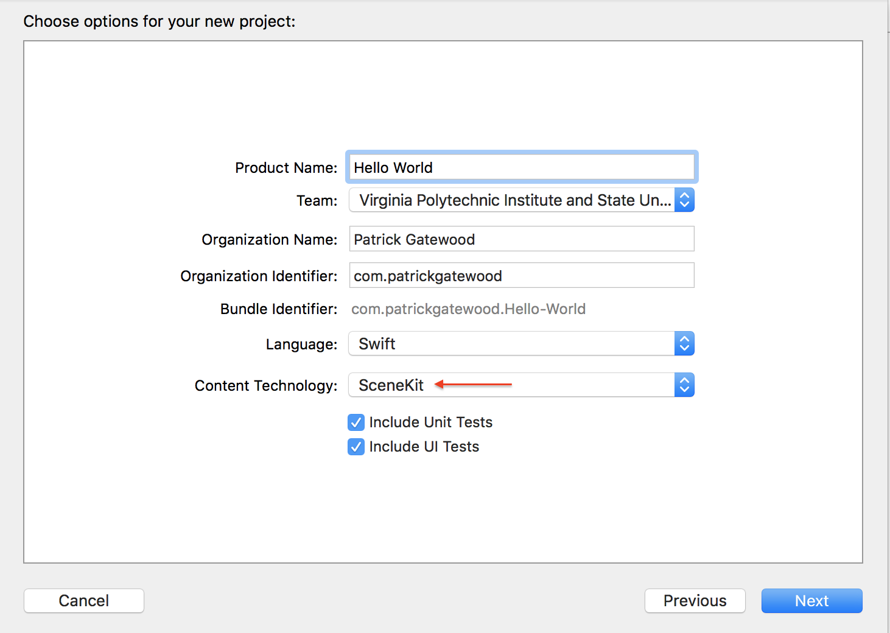
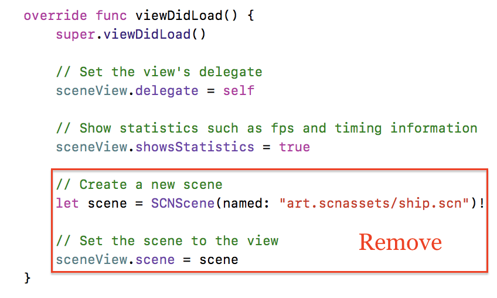

Tutorial: ARKit Hello World
Learning Objectives
- How to develop a simple Augmented Reality app in Xcode
- How to detect horizontal planes using ARKit
- How to add a SCNNode to the Augmented Reality view using SceneKit
Foreword: Software Life Cycle
Even with smaller applications, the software life cycle is crucial to developing and maintaining high-quality software. This tutorial encompasses only the programming process of the cycle.
Application Functionality
This is a universal application that will run on iPhone 6s and up and iPad Pro and up.
The application detects planes and applies a texture to the rendered plane representation.
Creating the project
This project requires Xcode 9.0 and above.
- Launch Xcode and select Create a new Xcode project from the Xcode welcome screen, or select File → New → Project...
- Choose iOS → Application → Augmented Reality App and click next.

- In the Choose options for your new project dialog, choose SceneKit as the Content Technology
Configuring Your Environment
Creating a new ARKit project generates a sample application, so some cleanup is required.
- In ViewController.swift, delete the sample code from
viewDidLoad().
 - Delete everything inside the art.scnassets folder.

Creating an AR Session
ARSession is an object shared by views that require motion tracking and image processing. This app will use an ARSCNView to display 3D SceneKit objects in the camera view.
ARSession must be configured before it can be run by ARSCNView. To do this, create an instance of ARWorldTrackingConfiguration and configure it to detect horizontal planes. Then the SceneView can run the ARSession.
This configuration can be achieved by adding the following code to the viewWillAppear()
method of your ViewController class.
override func viewWillAppear(_ animated: Bool) {
super.viewWillAppear(animated)
// Create a session configuration
let configuration = ARWorldTrackingConfiguration()
// Detect horizontal planes in the scene
configuration.planeDetection = .horizontal
// Run the view's session
sceneView.session.run(configuration)
}
Once your ARSession begins detecting planes, ARKit will start adding "anchors" for each plane it finds. An anchor is a distinct feature that ARKit uses to recognize and accurately track the plane. For each anchor, ARKit creates a SCNNode object and adds it to the SceneKit scene.
Adding Virtual Content
Once the ARSession is running, you SceneKit can place virtual content into the view. Apple recommends
having your ARSCNViewDelegate implement the renderer(_:didAdd:for:) method and adding
virtual content there.
To visualize ARKit's plane detection and anchoring, create a SCNPlane object and add it to the view. A SCNPlane is "a rectangular, one-sided plane geometry of specified width and height" that is prefect for visualizing the horizontal planes ARKit has found in your view. By default, ARKit highlights planes with a dull mercury color. To better visualize the detected plane, download an image to apply as a texture to the plane and add it to your project's Assets.xcassets folder. I used a simple grid texture.
{kind=link}
Add the following code to your ViewController, under the pre-generated // MARK: -
ARSCNViewDelegate comment.
func renderer(_ renderer: SCNSceneRenderer, didAdd node: SCNNode, for anchor: ARAnchor) {
// Place content only for anchors found by plane detection.
guard let planeAnchor = anchor as? ARPlaneAnchor else { return }
// Create a SceneKit plane to visualize the plane anchor using its position and extent.
let plane = SCNPlane(width: CGFloat(planeAnchor.extent.x), height: CGFloat(planeAnchor.extent.z))
let planeNode = SCNNode(geometry: plane)
planeNode.simdPosition = float3(planeAnchor.center.x, 0, planeAnchor.center.z)
// Give the SCNNode a texture from Assets.xcassets to better visualize the detected plane.
planeNode.geometry?.firstMaterial?.diffuse.contents = "grid.png" // NOTE: change this string to the name of the file you added
/*
`SCNPlane` is vertically oriented in its local coordinate space, so
rotate the plane to match the horizontal orientation of `ARPlaneAnchor`.
*/
planeNode.eulerAngles.x = -.pi / 2
// Make the plane visualization semitransparent to clearly show real-world placement.
planeNode.opacity = 0.25
/*
Add the plane visualization to the ARKit-managed node so that it tracks
changes in the plane anchor as plane estimation continues.
*/
node.addChildNode(planeNode)
}
Now ARKit will apply this texture to each plane it detects in your view.

Updating your 3D content
As ARKit ascertains more data about the view, it will update the bounds of its estimated planes. To
subscribe to these updates, have the ARSCNViewDelegate implement the
renderer(_:didUpdate:for:) delegate method.
func renderer(_ renderer: SCNSceneRenderer, didUpdate node: SCNNode, for anchor: ARAnchor) {
// Update content only for plane anchors and nodes matching the setup created in `renderer(_:didAdd:for:)`.
guard let planeAnchor = anchor as? ARPlaneAnchor,
let planeNode = node.childNodes.first,
let plane = planeNode.geometry as? SCNPlane
else { return }
// Plane estimation may shift the center of a plane relative to its anchor's transform.
planeNode.simdPosition = float3(planeAnchor.center.x, 0, planeAnchor.center.z)
/*
Plane estimation may extend the size of the plane, or combine previously detected
planes into a larger one. In the latter case, `ARSCNView` automatically deletes the
corresponding node for one plane, then calls this method to update the size of
the remaining plane.
*/
plane.width = CGFloat(planeAnchor.extent.x)
plane.height = CGFloat(planeAnchor.extent.z)
}
Your SCNNode will now visually update as ARKit updates its plane estimates!
Congratulations! You just created your first ARKit application.